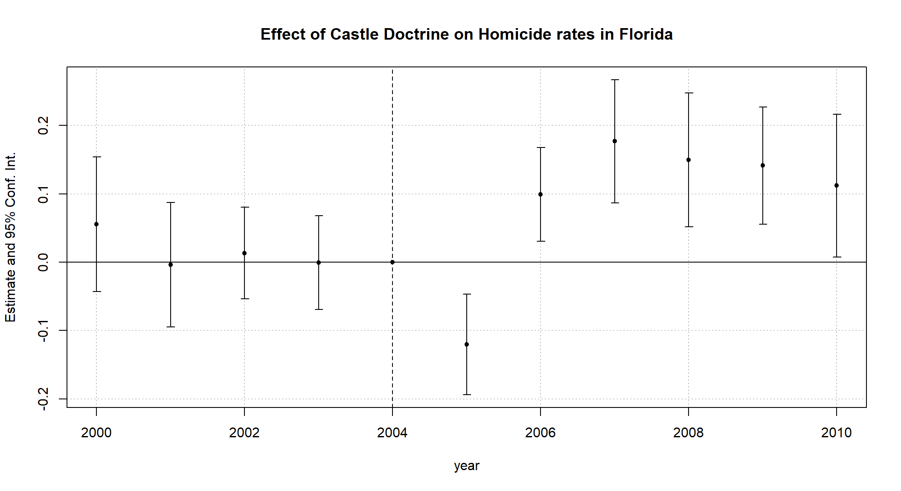

7 Difference-in-Differences
7.1 Line plots
The main identification assumption in the DinD framework is common trends. One way to see whether the assumption is reasonable in your setting is through line plots. The first step is to show how the outcomes in both treatment and control groups evolve - preferable with multiple pre-intervention periods.
Let’s replicate Figure 5.2 from Angrist and Pischke (2014) and see how trends in bank failures in Mississippi evolved before, during, and after the Caldwell crisis. Download the data here. In this exercise, we use the packages ggplot2 and ggthemes.
# If you don't have the packages, start with install.packages("ggplot2") and
# install.packages("ggthemes")
library(ggplot2)
library(ggthemes)
setwd("C:/Users/User/Desktop/474-Rlab/datasets")
banks<-readRDS("banks.RDS")
plot1<-ggplot()+
geom_line(data=banks, aes(x=year, y=`6th district`),size=1.4, color="#336666")+
geom_line(data=banks, aes(x=year, y=`8th district`),size=1.4, color="#8abbd0")+
labs(x = "Year", y="Number of banks in business")+
theme_economist(base_size = 14) +
scale_colour_economist()+
theme(axis.text=element_text(size=12),
axis.title=element_text(size=12,face="bold"))
plot1
Instead of using geom_line() for each district, you can reshape the dataset. That will easily allow you to have legends for each line:
library(reshape2)
panel_banks<-melt(banks, id.var='year')
head(panel_banks,5)## year variable value
## 1 1929 6th district 141
## 2 1930 6th district 135
## 3 1931 6th district 121
## 4 1932 6th district 113
## 5 1933 6th district 102Then, you apply almost the same code and get the plot with legends:
plot2<-ggplot()+
geom_line(data=panel_banks, aes(x=year, y=value, col=variable),size=1.4)+
scale_color_manual("", values=c("#8abbd0", "#336666"))+
labs(x = "Year", y="Number of banks in business")+
theme_economist(base_size = 14) +
theme(axis.text=element_text(size=12),
axis.title=element_text(size=12,face="bold"))
plot2
ggplot2 allows you to customize your graphs in many ways. For example, if you want different line types:
plot3<-ggplot()+
geom_line(data=panel_banks, aes(x=year, y=value, col=variable, linetype = variable),size=1.4)+
scale_color_manual("", values=c("#8abbd0", "#336666"))+
scale_linetype_manual("", values = c("solid", "dashed"))+
labs(x = "Year", y="Number of banks in business")+
theme_economist(base_size = 14) +
theme(axis.text=element_text(size=12),
axis.title=element_text(size=12,face="bold"))
plot3
Check also ggthemes here. There you have plenty of options for the plot background.
7.2 Difference-in-Differences Example: Cheng and Hoekstra (2013)
These notes are mostly based on Cunningham (2021). This exercise replicates some of the results of Cheng and Hoekstra (2013). The dataset (download here) comprehends 50 U.S states during the period 2000-2010. The authors aimed to evaluate the effect of the staggered adoption of “stand your ground” laws on crime. Check lecture notes for discussion here.
The variables are described below:
| Variable | Definition |
|---|---|
| state | U.S. State |
| year | Year |
| region | Census Region. 1 if northeast, 2 if midwest, 3 if south and 4 if west |
| treated | 1 if state is treated at any point from 2000 and 2010 |
| cdl | Treatment variable. Takes values from 0 to 1, depending on which month of the year the new law was passed |
| l_motor | Motor theft rate (in log) |
| l_larceny | Larceny rate (in log) |
| l_robbery | Robbery rate (in log) |
| l_assault | Aggravated Assault rate (in log) |
| l_homicide | Murder rate (in log) |
| blackm_15_24 | % of black male aged 15-24 |
| whitem_15_24 | % of white male aged 15-24 |
| blackm_25_44 | % of black male aged 25-44 |
| whitem_25_44 | % of white male aged 25-44 |
| l_exp_subsidy | Government spending (assistance and subsidies) per capita (in log) |
| l_exp_pubwelfare | Government spending (public welfare) per capita (in log) |
| l_police | Police per 100,000 residents (in log) |
| unemployrt | Unemployment Rate (%) |
| poverty | Poverty Rate (%) |
| l_income | Median Household Income ($) (in log) |
| l_prisoner | Prisoners per 100,000 residents (in log) |
| l_lagprisoner | Lag prisoners per 100,000 residents (in log) |
| popwt | State Population (used in the weighted regression) |
7.2.1 Falsification tests
setwd("C:/Users/User/Desktop/474-Rlab/datasets")
castle<-readRDS("castle.RDS")
library(fixest)
library(tidyverse)
## TWFE
reg_motor1<-feols(l_motor~cdl|state+year, cluster=~state, data=castle)
## TWFE with Region-by-Year Fixed Effects
reg_motor2<-feols(l_motor~cdl|state+year+region^year, cluster=~state, data=castle)
## TWFE with Region-by-Year Fixed Effects, additional controls and State-Specific Linear Time trends
reg_motor3<-feols(l_motor~cdl+blackm_15_24+whitem_15_24+blackm_25_44+
whitem_25_44+l_exp_subsidy+l_exp_pubwelfare+l_police+
unemployrt+poverty+l_income+l_prisoner+l_lagprisoner+
state:year
|state+year+region^year, cluster=~state, data=castle)
etable(reg_motor1,reg_motor2,reg_motor3,signifCode = c("***"=0.01, "**"=0.05, "*"=0.10), keep=c("cdl","blackm_15_24","whitem_15_24","blackm_25_44",
"whitem_25_44","l_exp_subsidy","l_exp_pubwelfare","l_police",
"unemployrt","poverty","l_income","l_prisoner","l_lagprisoner"))## reg_motor1 reg_motor2 reg_motor3
## Dependent Var.: l_motor l_motor l_motor
##
## cdl 0.0766* (0.0413) 0.0138 (0.0450) -0.0037 (0.0367)
## blackm_15_24 -0.0952* (0.0487)
## whitem_15_24 0.0046 (0.0155)
## blackm_25_44 0.0593** (0.0285)
## whitem_25_44 -0.0031 (0.0069)
## l_exp_subsidy -0.0144 (0.0309)
## l_exp_pubwelfare -0.0527 (0.0703)
## l_police 0.0049 (0.0372)
## unemployrt -0.0340** (0.0152)
## poverty -0.0010 (0.0114)
## l_income -0.1193 (0.1288)
## l_prisoner -0.0066 (0.1831)
## l_lagprisoner -0.2187 (0.2102)
## Fixed-Effects: ---------------- --------------- ------------------
## state Yes Yes Yes
## year Yes Yes Yes
## region^year No Yes Yes
## ________________ ________________ _______________ __________________
## S.E.: Clustered by: state by: state by: state
## Observations 550 550 550
## R2 0.95815 0.96851 0.98604
## Within R2 0.02611 0.00085 0.55696reg_lar1<-feols(l_larceny~cdl|state+year, cluster=~state, data=castle)
reg_lar2<-feols(l_larceny~cdl|state+year+region^year, cluster=~state, data=castle)
reg_lar3<-feols(l_larceny~cdl+blackm_15_24+whitem_15_24+blackm_25_44+
whitem_25_44+l_exp_subsidy+l_exp_pubwelfare+l_police+
unemployrt+poverty+l_income+l_prisoner+l_lagprisoner+
state:year
|state+year+region^year, cluster=~state, data=castle)
etable(reg_lar1,reg_lar2,reg_lar3,signifCode = c("***"=0.01, "**"=0.05, "*"=0.10), keep=c("cdl","blackm_15_24","whitem_15_24","blackm_25_44",
"whitem_25_44","l_exp_subsidy","l_exp_pubwelfare","l_police",
"unemployrt","poverty","l_income","l_prisoner","l_lagprisoner"))## reg_lar1 reg_lar2 reg_lar3
## Dependent Var.: l_larceny l_larceny l_larceny
##
## cdl 0.0075 (0.0227) 0.0015 (0.0208) -0.0137 (0.0231)
## blackm_15_24 -0.0489 (0.0368)
## whitem_15_24 -0.0022 (0.0105)
## blackm_25_44 0.0492** (0.0230)
## whitem_25_44 0.0018 (0.0043)
## l_exp_subsidy -0.0056 (0.0144)
## l_exp_pubwelfare 0.0485 (0.0318)
## l_police -0.0203 (0.0179)
## unemployrt -0.0010 (0.0061)
## poverty 0.0033 (0.0073)
## l_income 0.0076 (0.0738)
## l_prisoner -0.1146 (0.0780)
## l_lagprisoner 0.0311 (0.0987)
## Fixed-Effects: --------------- --------------- -----------------
## state Yes Yes Yes
## year Yes Yes Yes
## region^year No Yes Yes
## ________________ _______________ _______________ _________________
## S.E.: Clustered by: state by: state by: state
## Observations 550 550 550
## R2 0.94217 0.96118 0.98078
## Within R2 0.00096 3.97e-5 0.504897.2.2 Deterrence
reg_rob1<-feols(l_robbery~cdl|state+year, cluster=~state, data=castle)
reg_rob2<-feols(l_robbery~cdl|state+year+region^year, cluster=~state, data=castle)
reg_rob3<-feols(l_robbery~cdl+blackm_15_24+whitem_15_24+blackm_25_44+
whitem_25_44+l_exp_subsidy+l_exp_pubwelfare+l_police+
unemployrt+poverty+l_income+l_prisoner+l_lagprisoner+
state:year
|state+year+region^year, cluster=~state, data=castle)
etable(reg_rob1,reg_rob2,reg_rob3,signifCode = c("***"=0.01, "**"=0.05, "*"=0.10), keep=c("cdl","blackm_15_24","whitem_15_24","blackm_25_44",
"whitem_25_44","l_exp_subsidy","l_exp_pubwelfare","l_police",
"unemployrt","poverty","l_income","l_prisoner","l_lagprisoner"))## reg_rob1 reg_rob2 reg_rob3
## Dependent Var.: l_robbery l_robbery l_robbery
##
## cdl 0.0448 (0.0331) 0.0320 (0.0426) 0.0267 (0.0303)
## blackm_15_24 -0.2014** (0.0845)
## whitem_15_24 0.0103 (0.0230)
## blackm_25_44 0.1625** (0.0735)
## whitem_25_44 -0.0121 (0.0109)
## l_exp_subsidy 0.0061 (0.0261)
## l_exp_pubwelfare -0.0798 (0.0718)
## l_police 0.0132 (0.0305)
## unemployrt -0.0101 (0.0103)
## poverty -0.0095 (0.0116)
## l_income 0.0391 (0.1221)
## l_prisoner 0.0453 (0.1845)
## l_lagprisoner -0.3073* (0.1576)
## Fixed-Effects: --------------- --------------- ------------------
## state Yes Yes Yes
## year Yes Yes Yes
## region^year No Yes Yes
## ________________ _______________ _______________ __________________
## S.E.: Clustered by: state by: state by: state
## Observations 550 550 550
## R2 0.98516 0.98620 0.99273
## Within R2 0.01156 0.00467 0.47609reg_aslt1<-feols(l_assault~cdl|state+year, cluster=~state, data=castle)
reg_aslt2<-feols(l_assault~cdl|state+year+region^year, cluster=~state, data=castle)
reg_aslt3<-feols(l_assault~cdl+blackm_15_24+whitem_15_24+blackm_25_44+
whitem_25_44+l_exp_subsidy+l_exp_pubwelfare+l_police+
unemployrt+poverty+l_income+l_prisoner+l_lagprisoner+
state:year
|state+year+region^year, cluster=~state, data=castle)
etable(reg_aslt1,reg_aslt2,reg_aslt3,signifCode = c("***"=0.01, "**"=0.05, "*"=0.10), keep=c("cdl","blackm_15_24","whitem_15_24","blackm_25_44",
"whitem_25_44","l_exp_subsidy","l_exp_pubwelfare","l_police",
"unemployrt","poverty","l_income","l_prisoner","l_lagprisoner"))## reg_aslt1 reg_aslt2 reg_aslt3
## Dependent Var.: l_assault l_assault l_assault
##
## cdl 0.0555 (0.0604) 0.0698 (0.0638) 0.0317 (0.0386)
## blackm_15_24 0.0895 (0.0681)
## whitem_15_24 -0.0456 (0.0346)
## blackm_25_44 -0.0567 (0.0343)
## whitem_25_44 0.0103 (0.0115)
## l_exp_subsidy -0.0096 (0.0260)
## l_exp_pubwelfare 0.0603 (0.0404)
## l_police 0.1029*** (0.0232)
## unemployrt 0.0097 (0.0083)
## poverty -0.0068 (0.0099)
## l_income 0.0120 (0.1117)
## l_prisoner -0.0065 (0.1441)
## l_lagprisoner -0.0126 (0.1377)
## Fixed-Effects: --------------- --------------- ------------------
## state Yes Yes Yes
## year Yes Yes Yes
## region^year No Yes Yes
## ________________ _______________ _______________ __________________
## S.E.: Clustered by: state by: state by: state
## Observations 550 550 550
## R2 0.94615 0.95273 0.98960
## Within R2 0.01076 0.01415 0.783057.2.3 Homicide in Florida
florida<-castle%>%filter(state=="Florida"|treated==0)
florida<-florida%>%mutate(treat=ifelse(state=="Florida","Florida","Control Group"))
plot<-florida%>%group_by(treat, year)%>%summarize(Homicide=mean(l_homicide))
library(ggthemes)
ggplot()+
geom_line(data=plot,
aes(x=year, y=Homicide, col=treat),
size=1.4)+
scale_color_fivethirtyeight("Treatment Status")+
theme_fivethirtyeight()+
labs(x = "Year", y="Homicide (in log)")+
geom_vline(xintercept = 2005, linetype="dashed")+
scale_x_continuous(breaks=c(2000, 2003, 2005, 2008, 2010))+
theme(axis.text=element_text(size=12),
axis.title=element_text(size=12,face="bold"))
reg_homic1_fl<-feols(l_homicide~cdl|state+year, cluster=~state, data=florida)
reg_homic2_fl<-feols(l_homicide~cdl|state+year+region^year, cluster=~state, data=florida)
reg_homic3_fl<-feols(l_homicide~cdl+blackm_15_24+whitem_15_24+blackm_25_44+
whitem_25_44+l_exp_subsidy+l_exp_pubwelfare+l_police+
unemployrt+poverty+l_income+l_prisoner+l_lagprisoner+
state:year
|state+year+region^year, cluster=~state, data=florida)
etable(reg_homic1_fl,reg_homic2_fl,reg_homic3_fl,signifCode = c("***"=0.01, "**"=0.05, "*"=0.10), keep=c("cdl","blackm_15_24","whitem_15_24","blackm_25_44",
"whitem_25_44","l_exp_subsidy","l_exp_pubwelfare","l_police",
"unemployrt","poverty","l_income","l_prisoner","l_lagprisoner"))## reg_homic1_fl reg_homic2_fl reg_homic3_fl
## Dependent Var.: l_homicide l_homicide l_homicide
##
## cdl 0.1376*** (0.0353) 0.0457 (0.1134) 0.2674** (0.1192)
## blackm_15_24 -0.0366 (0.1948)
## whitem_15_24 0.1264 (0.0793)
## blackm_25_44 0.0710 (0.1585)
## whitem_25_44 -0.0496*** (0.0164)
## l_exp_subsidy 0.0530 (0.0607)
## l_exp_pubwelfare 0.4054** (0.1766)
## l_police 0.2374 (0.3583)
## unemployrt 0.0489** (0.0227)
## poverty -0.0706** (0.0334)
## l_income -0.6636* (0.3297)
## l_prisoner -1.034*** (0.3533)
## l_lagprisoner 0.1821 (0.3755)
## Fixed-Effects: ------------------ --------------- -------------------
## state Yes Yes Yes
## year Yes Yes Yes
## region^year No Yes Yes
## ________________ __________________ _______________ ___________________
## S.E.: Clustered by: state by: state by: state
## Observations 330 330 330
## R2 0.91563 0.92657 0.95739
## Within R2 0.00515 0.00057 0.42002florida_plot = feols(l_homicide~i(treated, year, 2004)|state+year, cluster=~state, data=florida)
coefplot(florida_plot)
7.2.4 Multistate Homicide Regression
reg_homic1<-feols(l_homicide~cdl|state+year, cluster=~state, data=castle)
reg_homic2<-feols(l_homicide~cdl|state+year+region^year, cluster=~state, data=castle)
reg_homic3<-feols(l_homicide~cdl+blackm_15_24+whitem_15_24+blackm_25_44+
whitem_25_44+l_exp_subsidy+l_exp_pubwelfare+l_police+
unemployrt+poverty+l_income+l_prisoner+l_lagprisoner+
state:year
|state+year+region^year,cluster=~state, data=castle)
etable(reg_homic1,reg_homic2,reg_homic3,signifCode = c("***"=0.01, "**"=0.05, "*"=0.10),
keep=c("cdl","blackm_15_24","whitem_15_24","blackm_25_44",
"whitem_25_44","l_exp_subsidy","l_exp_pubwelfare","l_police",
"unemployrt","poverty","l_income","l_prisoner","l_lagprisoner"))## reg_homic1 reg_homic2 reg_homic3
## Dependent Var.: l_homicide l_homicide l_homicide
##
## cdl 0.0877 (0.0638) 0.0811 (0.0779) 0.0672 (0.0457)
## blackm_15_24 0.0984 (0.1269)
## whitem_15_24 0.0676* (0.0401)
## blackm_25_44 0.1195 (0.1358)
## whitem_25_44 -0.0375*** (0.0133)
## l_exp_subsidy -0.0686 (0.0595)
## l_exp_pubwelfare 0.0645 (0.1059)
## l_police 0.1465** (0.0643)
## unemployrt 0.0196 (0.0189)
## poverty -0.0488** (0.0222)
## l_income -0.5859** (0.2803)
## l_prisoner -0.1407 (0.3372)
## l_lagprisoner -0.2033 (0.3975)
## Fixed-Effects: --------------- --------------- -------------------
## state Yes Yes Yes
## year Yes Yes Yes
## region^year No Yes Yes
## ________________ _______________ _______________ ___________________
## S.E.: Clustered by: state by: state by: state
## Observations 550 550 550
## R2 0.91055 0.91527 0.95323
## Within R2 0.01308 0.00869 0.45273reg_homic1<-feols(l_homicide~cdl|state+year, cluster=~state,weights=castle$popwt, data=castle)
reg_homic2<-feols(l_homicide~cdl|state+year+region^year, weights=castle$popwt, cluster=~state, data=castle)
reg_homic3<-feols(l_homicide~cdl+blackm_15_24+whitem_15_24+blackm_25_44+
whitem_25_44+l_exp_subsidy+l_exp_pubwelfare+l_police+
unemployrt+poverty+l_income+l_prisoner+l_lagprisoner+
state:year
|state+year+region^year, weights=castle$popwt, cluster=~state, data=castle)
etable(reg_homic1,reg_homic2,reg_homic3,signifCode = c("***"=0.01, "**"=0.05, "*"=0.10),
keep=c("cdl","blackm_15_24","whitem_15_24","blackm_25_44",
"whitem_25_44","l_exp_subsidy","l_exp_pubwelfare","l_police",
"unemployrt","poverty","l_income","l_prisoner","l_lagprisoner"))## reg_homic1 reg_homic2 reg_homic3
## Dependent Var.: l_homicide l_homicide l_homicide
##
## cdl 0.0801** (0.0342) 0.0946*** (0.0282) 0.1004** (0.0395)
## blackm_15_24 0.0613 (0.1089)
## whitem_15_24 0.0375 (0.0274)
## blackm_25_44 0.2302* (0.1263)
## whitem_25_44 -0.0283** (0.0120)
## l_exp_subsidy -0.0429 (0.0395)
## l_exp_pubwelfare 0.0494 (0.0644)
## l_police 0.1291** (0.0500)
## unemployrt 0.0142 (0.0121)
## poverty -0.0180 (0.0128)
## l_income -0.3152* (0.1643)
## l_prisoner -0.1367 (0.1953)
## l_lagprisoner -0.4096 (0.2566)
## Fixed-Effects: ----------------- ------------------ ------------------
## state Yes Yes Yes
## year Yes Yes Yes
## region^year No Yes Yes
## ________________ _________________ __________________ __________________
## S.E.: Clustered by: state by: state by: state
## Observations 550 550 550
## R2 0.93417 0.94109 0.96239
## Within R2 0.03018 0.03020 0.38079